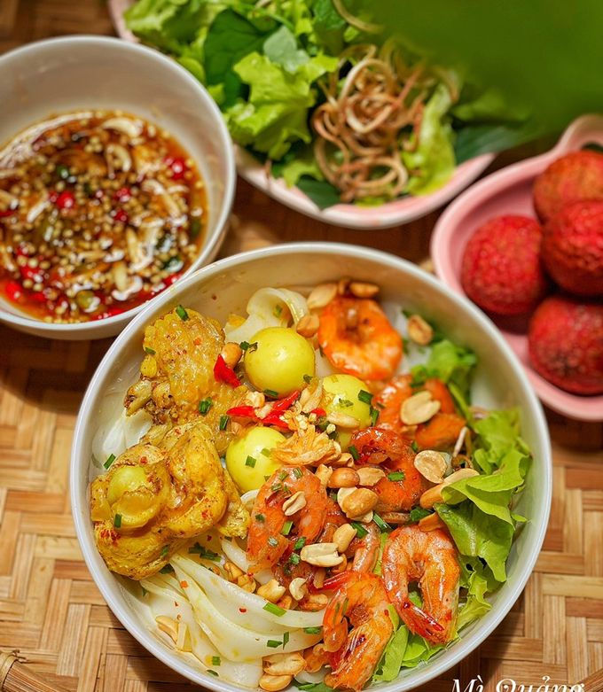
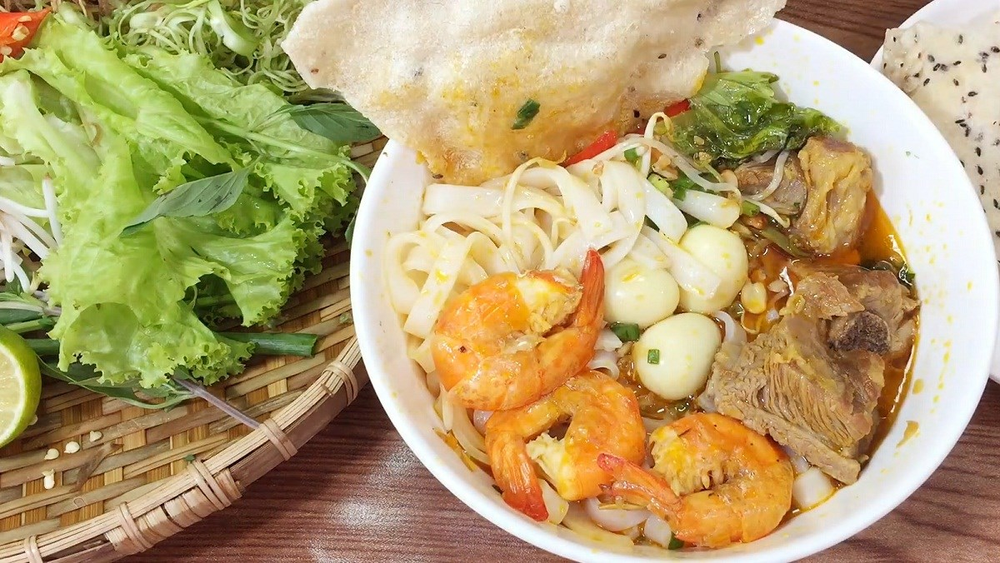
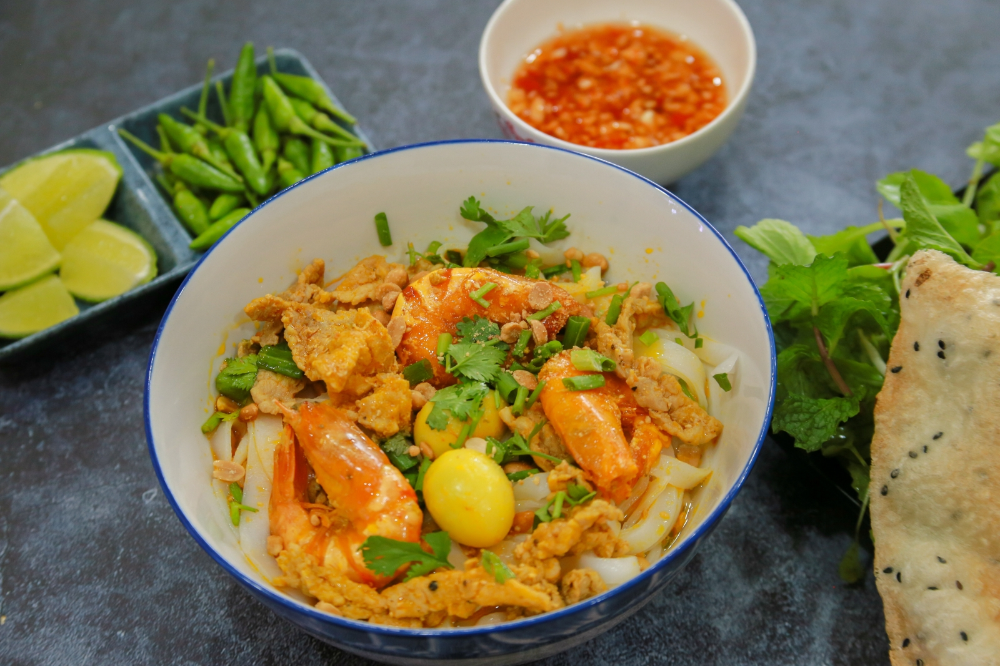
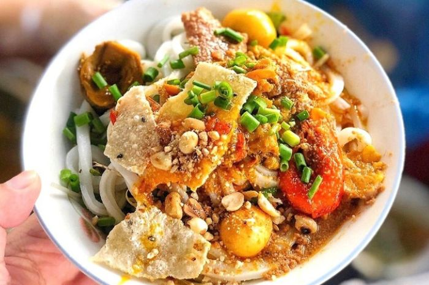

The Traditional Benchmarks

The BenchmarkMì Quảng Tôm Thịt
Sweet River Prawns & Caramelized Pork Belly
Fresh river prawns and tender pork belly braised in shallot-infused turmeric sauce. Served over freshly steamed turmeric noodles, crowned with roasted peanuts and quail eggs.

Countryside HeritageMì Quảng Gà Ta
Firm Countryside Free-Range Chicken
Selected free-range chicken renowned for sweet, firm meat and golden skin. Braised gently with turmeric and native aromatics to preserve tenderness and rich savory broth.

The Grand FeastMì Quảng Đặc Biệt Cô Viên
The Grand Combination of All Proteins
The ultimate realization of Cô Viên’s art: uniting braised prawns, caramelized pork, free-range chicken, and tender riblets with double accompaniments of toasted sesame crackers.
Specialty & Cut Variations

Slow BraisedMì Quảng Sườn Non
Succulent Young Pork Riblets
Young, tender riblets simmered until marrow juices dissolve into the reduction. The meat yields effortlessly, rich in natural gelatin and smoky turmeric notes.
 Coastal Delicacy
Coastal Delicacy
Mì Quảng Cá Lóc
Turmeric Pan-Seared Snakehead Fish
Firm fillets of fresh snakehead fish filleted with care, marinated in fresh crushed turmeric and fish sauce, then pan-seared until fragrant with no fishiness.
 Tender Beef
Tender Beef
Mì Quảng Bò
Simmered Beef Flank & Native Aromatics
Tender slices of premium beef slow-cooked in a robust reduction laced with star anise and shallot oils, yielding a deeply aromatic culinary depth.
Indispensable Culinary Accompaniments
True Mì Quảng is not enjoyed from a single bowl alone—it is assembled at the table with vital regional accompaniments that complete the sensory experience.
Bánh Tráng Đại Lộc
Thick, crunchy rice paper laden with black sesame seeds, toasted by hand over coconut charcoal. Shattered directly into the bowl for texture.
Dĩa Rau Sống 9 Vị
Shaved banana blossoms, Vietnamese mint (rau răm), fish mint, and fresh Trà Quế herbs that cleanse the palate with cool botanical crispness.
Ớt Xanh & Nước Mắm Nhĩ
Fresh green Central bird's-eye chilies bitten raw between mouthfuls, alongside pure artisanal fish sauce seasoned with crushed native garlic.